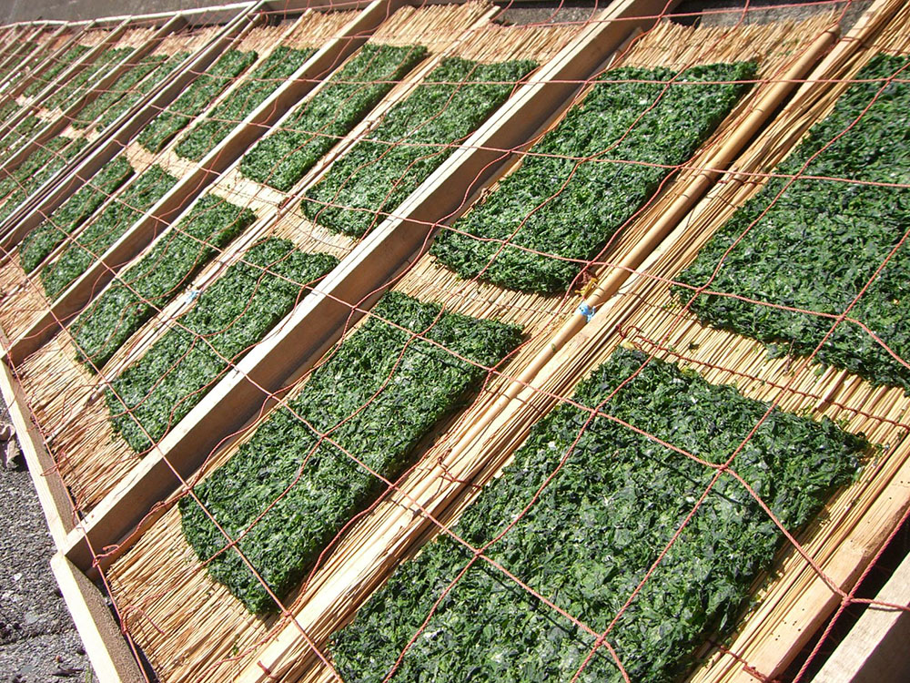

常见海苔评测
海苔很好吃，也很有营养，不过对于宝宝们来说，肯定是要低盐低钠的。
首先，提一下
多盐（吃的太咸）的危害。
食盐即氯化钠，由钠元素和氯元素组成。在人体内，钠元素调节肌肉收缩、神经冲动、水含量等，人体每一个细胞都需要钠元素。此外，舌头上有感受器，当盐入口后，感受器会将信息传递给大脑。但是，如果人体吸收的钠元素超过肾所能承受的范围，血液就会滞留水分，迫使心脏工作强度增大， 导致高血压、肾脏疾病、心脑血管疾病、糖尿病等。
接下来，看看什么是低盐，低盐并不是通过口味的咸淡来判断的。
世界卫生组织建议每人每天食盐摄入量的“安全线”是6克。因为许多营养学家认为，人体每日对钠的“安全摄入量”应该为1000——2500毫克，盐中的钠含量大约是40%，按照这个比例推算，人每日食盐量就应该是2.5克——6克。而世界卫生组织最新报道，每人每天摄入食盐量由不超过6克改为5克。
这些只能是针对做饭，如果面对商品中的食品，怎么判断呢？那就需要通过营养成分表中，每100克含有的钠或钾的量去判断。
中国国家标准《 GB 13432—2013 预包装特殊膳食用食品标签》对有关钠的食品规定：
低钠：
固体食品，每100克含钠：120毫克
钠非常低：
固体食品，每100克含钠：40毫克
无钠：
固体食品，每100克含钠：5毫克
最后进入正文，列一下目前统计到的几种海苔：
注：每次更新列表，只加粗绿色显示当前列表中含钠量最低的一款；列表条目按拼音排序。
A、无添加。未见到样品。
B、有添加，含钠量最低的三名是：
-
小老板调味海苔（番茄味）
条形码：8857107231927
每100克含钠 281毫克。
添加：食用盐，白砂糖，增味剂（5'-鸟苷酸二钠，5'-肌苷酸二钠）。 -
小老板调味海苔（经典原味）
条形码：8857107231774
每100克含钠 335毫克。
添加：食用盐，增味剂（5'-鸟苷酸二钠，5'-肌苷酸二钠）。 -
米奇系列 香脆调味海苔（辣味）（25克装）
条形码：8859340705029
每25克含钠：119毫克，相当于每100克含钠：119x4= 476毫克。
添加：食用盐。
1、宝贝炒海苔（30克/袋）
条形码：8801164136121
每100克含钠： 1470 毫克
添加：白砂糖，食用盐。
2、成京调味海苔（4克/小包，每大包有3小包）
小包条形码：8807004804519
大包条形码：8807004111297
每100克含钠： 1725 毫克
添加：食用盐。
3、成京橄榄油调味海苔（4克/小包，每大包有9小包）
小包条形码：8807004801082
大包条形码：8807004804106
每100克含钠： 1614 毫克
添加：食用盐。
4、福子迪士尼竹盐海苔（2克/小包，每大包含6小包）
小包条形码：8809424901243
大包条形码：8809424901250
按小包计算，每2克含钠 10 毫克，相当于每100克含钠 500 毫克
按大包计算，每100克含钠
518
毫克
添加：食用盐。
5、迪士尼迷你传统海苔（2克/小包，每大包含6小包）
小包条形码：8809424901229
大包条形码：8809424901236
每100克含钠 582 毫克
添加：食用盐。
6、迪士尼葡萄籽油海苔（5克x3）
小包条形码：8809424901168
大包条形码：8809424900956
按5克计算，含钠28毫克，相当于每100克含钠：100÷5x28= 560 毫克
添加：食用盐。
7、迪士尼绿茶海苔（5克x3）
小包条形码：8809424901175
大包条形码：8809424900949
按5克计算，含钠27毫克，相当于每100克含钠：100÷5x27= 540 毫克
添加：食用盐。
8、广川名家橄榄油海苔（4克/小包，每大包包含3小包）
小包条形码：8809149833553
大包条形码：8809149834512
每100克含钠： 1950 毫克
添加：食用盐。
9、广川名家黑蒜味海苔（4克/小包，每大包包含3小包）
小包条形码：8809149830071
大包条形码：8809149834550
每100克含钠： 1875 毫克
添加：食用盐，竹盐。
10、广川名家泡菜味海苔（5克/小包，每大包包含3小包）
小包条形码：8809149831283
大包条形码：8809149834543
每100克含钠： 1500 毫克
添加：食用盐，烤盐，泡菜粉（增味剂（5'-鸟苷酸二钠，5'-肌苷酸二钠））。
11、广川名家芥末味海苔（5克/小包，每大包包含3小包）
小包条形码：8809149831245
大包条形码：8809149834536
每100克含钠： 700 毫克
添加：食用盐，烤盐。
12、广泉海苔工厂牌海苔（4克x3）
小包条形码：8804702301432
大包条形码：8804702301456
按4克计算，含钠55毫克，相当于每100克含钠：100÷4x55= 1375 毫克
添加：食用盐。
13、海地村宝贝海苔（4.7克/小包）
条形码：8801077169001
每100克含钠： 1622 毫克
添加：食用盐。
14、会坤海苔（芝麻夹心·番茄味）（8克装）
条形码：6970711370096
每100克含钠 879 毫克
添加：调味液（白砂糖，酿造酱油，麦芽糖）。
15、会坤海苔（芝麻夹心·原味）（8克装）
条形码：6970711370089
每100克含钠 879 毫克
添加：调味液（白砂糖，酿造酱油，麦芽糖）。
16、海牌海苔（2克/小包）
条形码：8801039280027
每包2克，含钠40毫克
相当于每100克含钠：100÷2×40 ≈ 2000 毫克
添加：食用盐，谷氨酸钠。
17、海未来 妈妈情海苔（5克x3）
小包条形码：8809089430683
大包条形码：8809089430683 （大小包条码竟然一样。。。。。）
按5克测量，含钠：107毫克，相当于每100克含钠：100÷5×107 = 214 0 毫克
添加：食用盐。
18、韩国真珠托马斯小火车快乐成长海苔（4.7克/小包，每大包含3小包）
小包条形码：8801077169803
按2克测量，含钠：15毫克，相当于每100克含钠：100÷2×15 = 750 毫克
大包条形码：8801077169209
按4.7克测量，含钠：35毫克，相当于每100克含钠：100÷4.7×35 = 744.68 毫克
添加：食用盐。
19、韩国真珠托马斯小火车葡萄籽油海苔（2.1克/小包，每大包含10小包）
小包条形码：8801077169506
按2克测量，含钠：15毫克，相当于每100克含钠：100÷2×15 = 750 毫克
大包条形码：8801077169308
按2.1克测量，含钠：16毫克，相当于每100克含钠：100÷2.1×16 = 761.90 毫克
添加：食用盐。
20、九日 · 脆米海苔（25克装）
条形码：8807379111724
每100克含钠： 690 毫克
添加：调味料（白砂糖，海带粉，果葡糖浆，虾粉，水，酿造酱油，鳀鱼粉，食用酒精，辣椒粉）。
21、九日 · 扁桃仁海苔（25克装）
条形码：8807379111717
每100克含钠： 840 毫克
添加：调味料（水，白砂糖，酿造酱油，鳀鱼粉，虾粉，海带粉，辣椒粉）。
22、米奇系列 香脆调味海苔（25克装）
条形码：8859340705012
每25克含钠： 163 毫克，相当于每100克含钠：163x4= 652 毫克
添加：食用盐。
23、米奇系列 香脆调味海苔（辣味）（25克装）
条形码：8859340705029
每25克含钠： 119 毫克，相当于每100克含钠：119x4= 476 毫克
添加：食用盐。
24、农亨岩烧海苔（原味）（2克/小包）
条形码：6930058200173
每100克含钠： 1536 毫克
添加：食用盐，白砂糖，味精。
25、吴掌柜海苔卷（经典味）（28.8克/盒，8小包）
盒条形码：6930058201507
单独小包的条形码：6930058201514
每100克含钠： 1432 毫克
添加：食用盐，味精，食品添加剂（氧化羟丙基淀粉，5'-鸟苷酸二钠，5'-肌苷酸二钠）。
26、小老板调味海苔（经典原味）
条形码：8857107231774
每100克含钠 335 毫克
添加：食用盐，增味剂（5'-鸟苷酸二钠，5'-肌苷酸二钠）。
27、小老板调味海苔（番茄味）
条形码：8857107231927
每100克含钠 281 毫克
添加：食用盐，白砂糖，增味剂（5'-鸟苷酸二钠，5'-肌苷酸二钠）。
28、小老板调味海苔（海鲜味）
条形码：8858702403603
每100克含钠 403 毫克
添加：食用盐，白砂糖，增味剂（5'-鸟苷酸二钠，5'-肌苷酸二钠），食用香精，酸水解植物蛋白调味液。
29、小老板烤海苔卷（烤鱿鱼辣味）（3.6克x9）
小袋条形码：8858702410878
大袋条形码：8858702410885
每100克含钠 835 毫克
添加：食用盐，白砂糖，食用香料，增味剂（5'-鸟苷酸二钠，5'-肌苷酸二钠），酸水解植物蛋白调味液。
30、小老板辛辣味香脆紫菜（3.6克x9）
小袋条形码：8858702410847
大袋条形码：8858702410854
每100克含钠 1655 毫克
添加：食用盐，白砂糖，食用香料，增味剂（5'-鸟苷酸二钠，5'-肌苷酸二钠），水解大豆蛋白。
31、小老板经典香脆紫菜（3.6克x9）
小袋条形码：8858702410816
大袋条形码：8858702410823
每100克含钠 835 毫克
添加：食用盐，白砂糖，香辛料调味粉，增味剂（5'-鸟苷酸二钠，5'-肌苷酸二钠），水解植物蛋白。
32、喜之郎 美好时光 原味海苔（4.5克/袋，每大包含6小袋）
小袋条形码：6926475202074
大包条形码：6926475202470
每4.5克含钠：111毫克，相当于每100克含钠：100÷4.5×111 = 2466.67 毫克
添加：食用盐，白砂糖，味精，食品添加剂（5'-呈味核苷酸二钠）。
33、玉民 · 荞麦海苔薄烧（荞麦芝麻）（40克装）
条形码：4712755020498
每份40克，含钠：290毫克
相当于每100克含钠： 725 毫克
添加：砂糖，盐。
34、ZEK橄榄油烤海苔（4克/小包，每大包含3小包）
小包条形码：8809273401215
大包条形码：8809273401543
每100克含钠： 634 毫克
35、ZEK葡萄籽油烤海苔（4克/小包，每大包含3小包）
小包条形码：8809273401222
大包条形码：8809273401505
每100克含钠： 597 毫克
36、ZEK海苔（5克/小包，每大包含3小包）
小包条形码：8809420330016
大包条形码：8809420330054
每100克含钠： 626 毫克
添加：食用盐。
37、ZEK竹盐烤海苔（5克/小包，每大包含3小包）
小包条形码：8809420330023
大包条形码：8809420330061
每100克含钠： 689 毫克
微信公众号